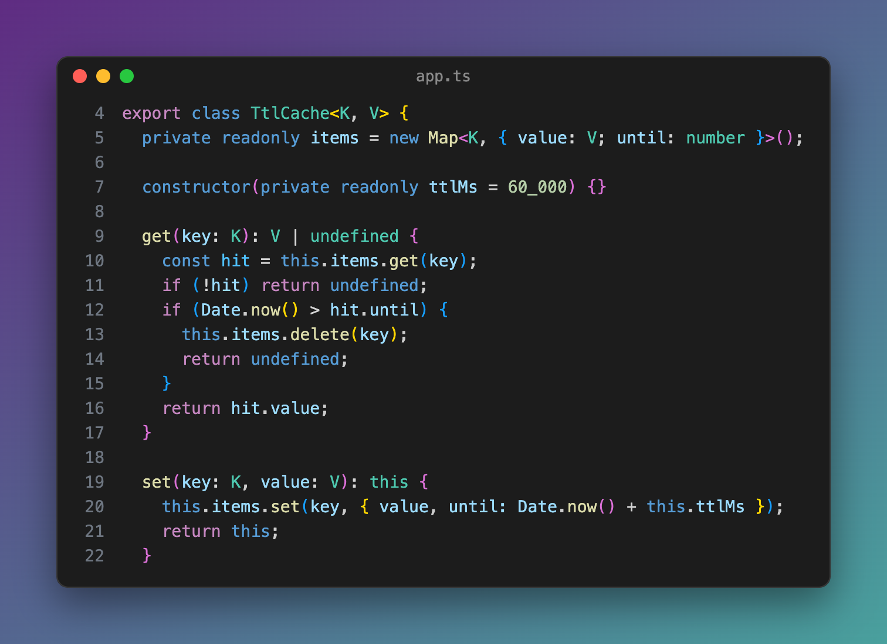
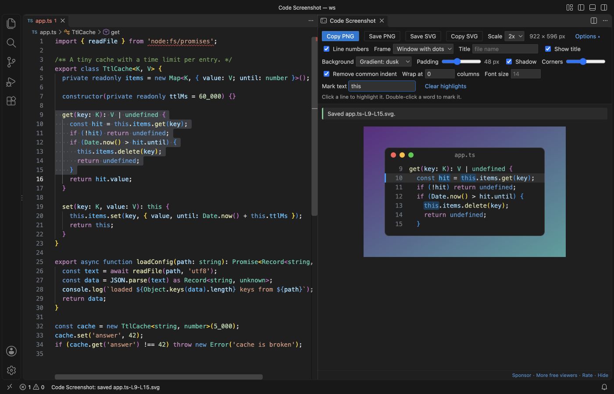
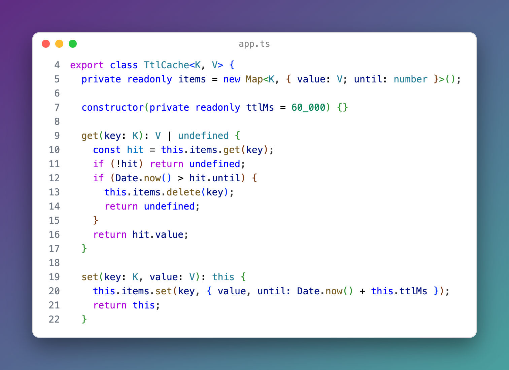

Code Screenshot & Code Snapshot (Copy Code as Image, PNG/SVG)
Code Screenshot & Code Snapshot (Copy Code as Image, PNG/SVG), a VS Code extension by Zovo
Code screenshot and code snapshot in one key: select code, press Cmd+Alt+C (Shift+Alt+C) and a PNG of it is on your clipboard, in your editor theme, font and colors. Save PNG or SVG, line numbers, highlights, window frame, backgrounds. Free, no sign-in, works offline.
Free, MIT license. Needs VS Code 1.90.0 or newer. Extension ID zovo.zovo-code-screenshot, version 0.1.0.
Select code, press Cmd+Alt+C (Shift+Alt+C on Windows and Linux), and a PNG of it is on your clipboard. It is drawn with your editor theme, font, size, ligatures and bracket colors. Free, no sign-in, works offline.

Real output from VS Code 1.142 on macOS: the packaged extension in a clean profile, the shortcut pressed through the debug port by scripts/e2e-vscode.mjs. The picture below is the PNG it put on the clipboard.

- One key, then paste: no button to press in a panel, no website, no link. The panel beside the editor shows what was copied and keeps your editor focused.
- You get the image, not the text. The PNG goes on the clipboard with local system commands. If that fails, the panel says why, leaves your clipboard as it was and offers Save PNG. It never pastes an old clipboard item as the "screenshot".
- It looks like your editor. The colors come from the TextMate engine VS Code uses, with your color theme, your token color customizations and bracket pair colors. The font is your
editor.fontFamily, size, weight, line height and ligatures, and the panel waits for fonts before it draws.
Quick start
- Select the lines you want. Partial lines are fine: whole lines are taken, so the indent is right.
- Press Cmd+Alt+C (Shift+Alt+C), or right-click and pick Copy as Image (PNG).
- Paste into a chat, an issue, a doc or a slide.
"Code Screenshot: Get Started" in the Command Palette opens a short tour.
Questions people ask
Is Code Screenshot & Code Snapshot (Copy Code as Image, PNG/SVG) free?
Yes. Code Screenshot & Code Snapshot (Copy Code as Image, PNG/SVG) is free and MIT licensed.
How do I install Code Screenshot & Code Snapshot (Copy Code as Image, PNG/SVG)?
Click "Install in VS Code" above, or search for zovo.zovo-code-screenshot in the Extensions view.
What you can change

| Option | What it does |
|---|---|
| Copy PNG, Save PNG, Save SVG, Copy SVG | PNG at 1x, 2x, 3x or 4x. SVG keeps the code as text, so it is sharp at any size and the text can be selected. |
| Line numbers | The real line numbers from the file, so line 40 says 40. |
| Highlight lines | Click a line in the picture to highlight it, Shift+click for a range. |
| Mark a word | Double-click a word in the picture, or type it in Mark text to mark every match. |
| Frame | A window with three dots, a plain window, or no window. The title is the file name or your own text. |
| Background | Five gradients, one color, the editor color, or transparent (PNG and SVG keep the transparency). Padding, shadow and rounded corners. |
| Remove common indent | A nested block starts at the left edge. The indent inside it stays. Tabs become spaces at your tab size. |
| Wrap at N columns | Long lines wrap and keep their indent. Off by default, so nothing is stretched or squeezed. |
| Folded code and gaps | A folded region is one "folded lines" row. With several selections, the lines between them are one "⋯" row. |
Your choices are kept for the next picture. Settings (codeScreenshot.*) give the defaults.
Saving files
Save PNG and Save SVG name the file after the lines, for example app.ts-L12-L40.png, and open the folder you saved to last. Set codeScreenshot.saveFolder (you can use ~ and ${workspaceFolder}) to always use one folder. Turn off codeScreenshot.askWhereToSave to save at once without the dialog.
Themes

The picture follows the theme you use, including high contrast themes and themes from the Marketplace. Change the theme and the open panel draws again.
Large selections and minified files
Code Screenshot reads only the lines you selected, plus up to 3,000 lines before them so a comment or string that starts earlier is colored right. It never loads the whole file into the extension.
- A selection longer than
codeScreenshot.maxLines(1,000) draws its first 1,000 lines and says how many were left out. - Lines longer than
codeScreenshot.maxLineLength(1,000 characters) are cut with a "…" and a note. In our tests a 10 MB one-line minified file was copied in 0.5 to 4.4 seconds (the slow run was on a very busy machine), and the editor stayed responsive. - A PNG that would be wider or taller than 16,384 pixels at the scale you picked is made at a smaller scale, and the panel tells you the scale it used. SVG has no such limit.
Remote windows, WSL and the browser
In Remote SSH, WSL and Dev Containers windows the extension runs on your own computer (it asks for the UI side first), so the clipboard is yours. In a browser (for example code-server), the panel copies the image itself; if the browser does not allow it, it offers Save PNG.
| System | Clipboard command |
|---|---|
| macOS | osascript (built in) |
| Windows | PowerShell (built in) |
| Linux | xclip on X11, wl-copy (wl-clipboard) on Wayland |
Privacy
No account, no telemetry, no network. The panel's content security policy blocks every remote source, code is drawn with DOM text nodes (so <script> in your code is just text), and the extension makes no network calls. The rating question and the Sponsor links sit in the panel, never in the picture, and can be turned off.
Settings
| Setting | Default | |
|---|---|---|
codeScreenshot.scale | 2 | PNG scale 1 to 4 |
codeScreenshot.lineNumbers | true | Line numbers |
codeScreenshot.frame | mac | mac, plain or none |
codeScreenshot.showTitle | true | File name in the frame |
codeScreenshot.background | gradient-1 | Gradients, solid, editor, transparent |
codeScreenshot.backgroundColor | #6c5ce7 | Color for solid |
codeScreenshot.padding | 48 | Space around the window |
codeScreenshot.shadow | true | Window shadow |
codeScreenshot.cornerRadius | 10 | Rounded corners |
codeScreenshot.removeCommonIndent | true | Move a nested block to the left edge |
codeScreenshot.wrapColumn | 0 | Wrap at N columns (0 is off) |
codeScreenshot.fontFamily | (editor font) | Another font for pictures only |
codeScreenshot.maxLines | 1000 | Line limit |
codeScreenshot.maxLineLength | 1000 | Characters per line |
codeScreenshot.whenNothingSelected | visible | visible lines or the whole file |
codeScreenshot.saveFolder | (last folder) | Folder for saved files |
codeScreenshot.askWhereToSave | true | Show the save dialog |
codeScreenshot.followSelection | true | Update the open panel when you select other lines |
Limits
- Colors come from TextMate grammars, like the editor without semantic highlighting. With themes that use semantic colors (for example some TypeScript variables), a few tokens can differ from the editor.
- A folded region is found from the editor's visible lines, so a fold that is scrolled out of view counts as unfolded.
- The SVG names your font; a computer without that font shows the next one in the list. The PNG has the font drawn in.
License
MIT
Guides
Install Code Screenshot & Code Snapshot (Copy Code as Image, PNG/SVG)
Click the button to open VS Code and install it, or press Ctrl+P (Cmd+P on macOS) in VS Code and run ext install zovo.zovo-code-screenshot.
Free, MIT license. Needs VS Code 1.90.0 or newer. Extension ID zovo.zovo-code-screenshot, version 0.1.0.
Source code and issues are on GitHub.
Support this work
If this extension saves you time, you can support the work on GitHub Sponsors. Monthly tiers start at $5, and one-time tiers start at $15. Sponsorship is optional, and the tool works the same without it.
Need your format supported?
Open a format request with a sample file, and I reply there whether it can be done. For USD 299 once, through this GitHub Sponsors tier, I add your file format or a missing feature to this extension, with tests, within 7 days.